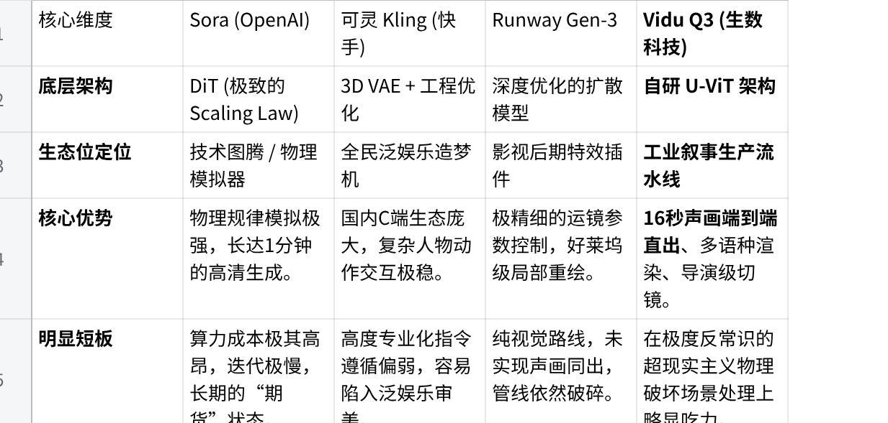

摘要
2026年初，生数科技发布了其视频大模型的最新迭代版本——Vidu Q3。在Sora的“物理模拟”光环和可灵的“泛娱乐”生态包抄下，Vidu Q3 凭借**“16秒声画端到端直出”、“导演级切镜”及“多语种精确渲染”**三大突破，硬生生地杀出了一条极具价值的生态位：工业级叙事生产流水线。
本文采用「横纵分析法」，从时间纵深回溯其底层架构的演进逻辑，从空间横向对比全球赛道的竞争格局，最终推演出AI视频技术正从“抽卡玄学”走向“计算叙事”的产业变革趋势。
一、 纵向溯源：从底层架构探索到物理世界模拟
Vidu Q3的爆发并非偶然，其背后是清华系团队长达四年的技术深耕与一场蓄谋已久的工程化突围。
1. 抢跑与蛰伏：U-ViT架构的底层自信（2022.09 - 2023）
外界普遍将2024年初Sora的发布视为视频大模型的元年，但在技术演进的暗线里，生数科技的伏笔早在一年半前就已埋下。
2022年9月，清华大学朱军教授团队在学术界提出了一种名为 U-ViT 的网络架构，创造性地将Vision Transformer（ViT）与Diffusion结合。这一决策极具前瞻性，比OpenAI后来被奉为圭臬的DiT（Diffusion Transformer）架构早了整整三个月。
这种“不抄作业”的底层架构自信，解释了为什么在2024年Sora引爆全球焦虑时，生数科技能够成为国内最快响应、且底层逻辑自洽的团队。2023年初生数科技的成立，标志着他们开始将学术成果推向工程化落地。
2. 标准重塑：从“动态壁纸”到实体稳定性（2024年初 - 2024年中）
2024年初Sora的问世，直接拉高了市场的认知天花板。同年4月，生数科技率先发布了中国首个全面对标Sora的视频大模型——Vidu。
最初的Vidu，其核心历史使命是：打破“不可用”的魔咒，确立国产大模型在时空一致性上的能力门槛。 彼时的行业模型多为2-3秒的“动态壁纸”，而Vidu的上线，让严苛的专业用户开始引入针对实体稳定性、关键帧提取的自动化评测SOP。这标志着视频评价标准从“单帧画质”向“时空逻辑”的深刻转变。
3. 数据飞轮与工程狂飙（2024年底 - 2025）
Vidu通过Q1、Q2版本的快速迭代，在全球超200个国家和地区以API（MaaS）和Vidu Agent（SaaS）的形式提供服务。此阶段，生数科技意识到“纯视觉奇观”无法形成商业闭环，必须深入影视、电商、出海等高频商业赛道。
通过解决“视频理解与生成的双螺旋结构”，模型内部逐渐具备了深刻的多模态理解能力，为即将到来的质变积累了庞大的真实工业管线反馈数据。
4. 跨越叙事阈值：Vidu Q3 的质变（2026.02 至今）
2026年2月，Vidu Q3正式发布，在权威基准测试（如Artificial Analysis）中名列前茅。Q3打破了视频生成的“叙事阈值”，实现了16秒声画同步直出。
为什么死磕16秒与声画同出？ 16秒是内容工业界的一个隐秘门槛，刚好能在短视频流中完成一次完整的“起承转合”（痛点引入->视觉冲击->情绪释放->卖点口播）。传统的串行管线（生成无声画面 -> ASR配音 -> 剪辑对齐）被Q3的端到端生成彻底重写，情绪不再割裂，语义实现了前置对齐。至此，生数科技的终局目标彻底清晰：不再局限于视频工具，而是向构建理解时间、空间、动作与因果关系的通用世界模型（General World Model）挺进。
二、 核心技术护城河：从“生成像素”到“生成逻辑”
Vidu Q3在商业交付上的高可用性，得益于其硬核的底层技术突破：
U-ViT 的深层特征融合：利用Transformer的全局注意力机制，在特征空间早期深度融合多模态信号，有效克服了长序列视频末端的“特征漂移”问题，保证了长时空的逻辑一致性。
潜空间声画端到端对齐 (Latent Audio-Visual Alignment)：在潜空间中强制施加声画语义对齐约束。生成的视频不仅口型精准匹配外语台词，环境音与物理动作也原生同步，彻底告别“哑巴电影”。
隐式三维坐标构建（导演级切镜）：面对“多镜头”指令，模型在内部构建临时的三维场景坐标系。无论广角、特写如何切换，人物面貌、空间关系保持绝对一致，实现了真正意义上的“导演思维”。
高保真文本渲染引擎：攻克了扩散模型的“鬼画符”难题，能够精准渲染多语种文字（如招牌、海报），并符合物理光影规律，极大提升了商业素材的可用性。
三、 横向竞争格局：2026 视频大模型修罗场
站在当前的时间切片上，我们选取全球最具代表性的三款同维产品与 Vidu Q3 进行交叉剥析：

生态位研判： Sora悬在神坛，可灵下沉C端，Runway固守特效。而Vidu Q3极其精准地切入了“高质量商业内容自动化生产”的真空地带。对于需要大批量审核短视频、生成出海营销素材、评估内容转化率的专业机构而言，Q3这种“可结构化、高保真、声画一体”的特种兵模型，是目前唯一的优选方案。
四、 趋势洞察与业务启示：迎接“后期前置化”
Vidu Q3 的真正价值，不在于它生成了多漂亮的画面，而在于它将视频生成从一门“玄学”变成了一门“可度量的工业科学”。
工作流的坍缩与并行化： 传统串行管线（脚本->分镜->生成画面->配音->剪辑）将崩溃。随着剪辑（切镜）和配音动作在模型推断阶段前置完成，未来的工作流将转变为并行架构。只需向模型输入高度结构化的 Prompt（脚本+台词+镜头指令），即可直接输出叙事单元。
评测体系的升维重构： 过去的视频审计系统仅关注“单帧瑕疵”或“动作连贯性”。随着Q3的普及，新一代的评测体系必须升级，具备对长达十几秒的视听叙事段落中“逻辑因果”、“情感张力”和“声画时间戳精准度”的综合评估能力。
对我司现有业务的直接赋能（Actionable Insights）：
出海营销大杀器：利用Q3的多语种渲染和声画同步，直接批量产出带多国语言口型的投放素材，极大降低本地化配音成本，提升AB测试效率。
产品Demo前置化：在概念验证阶段，利用其强大的指令遵循与实景渲染能力，低成本、快速地生成高保真概念片，替代部分高成本的实拍或3D渲染工作。
结语： 从生成像素到生成逻辑，从碎片素材到叙事闭环。掌握新一代视频大模型（如 Vidu Q3）的使用范式，不仅是工具的升级，更是对内容生产力底层逻辑的重构。谁先将这些“计算叙事”能力无缝接入现有工作流，谁就能在下一个周期中获得碾压性的效率优势。